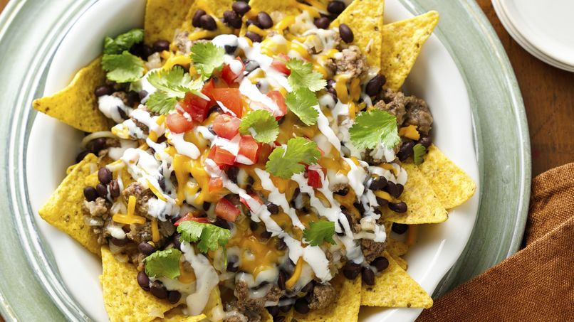
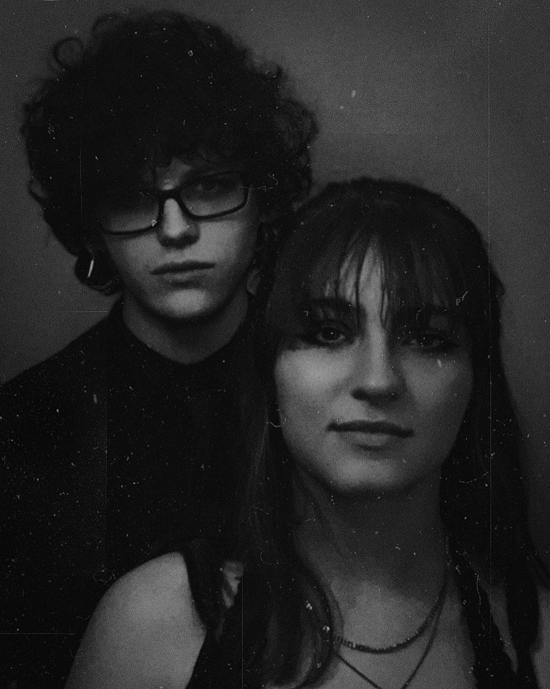

Elevate Your Spirit, One Bite at a Time
At Mystic Bites, every dish is a sacred experience, a fusion of flavor and energy that stirs something deep within. With each bite, you'll feel as though your spirit has awakened, shedding the weight of the everyday and rising into something infinite. It’s more than nourishment; it’s a cosmic journey, where you rediscover yourself among the stars, aligned with universe, grounded in peace, and glowing with celestial light.
Reserve Table

APPETIZERS

ENTREES

DESSERTS

Learn More
Our Humble Beginnings
Founders Colby and Jasmine Wooldridge
Mystic Bites was founded in 1907 by husband-and-wife duo, Colby and Jasmine Wooldridge. After years of working in the culinary industry, and traveling the world, the couple decided to combine their love for bold flavors and celestial magic into one unique concept.
Inspired by their experiences and the diverse cultures they encountered, Mystic Bites began as a small, cozy eatery offering a wonderously magical expierence with a bit of a twist.
Over the years, their mysteriously innovative menu, and welcoming atmosphere quickly gained a loyal following, transforming Mystic Bites into a beloved local hotspot known for its creative dishes and commitment to high-quality ingredients.
Learn More